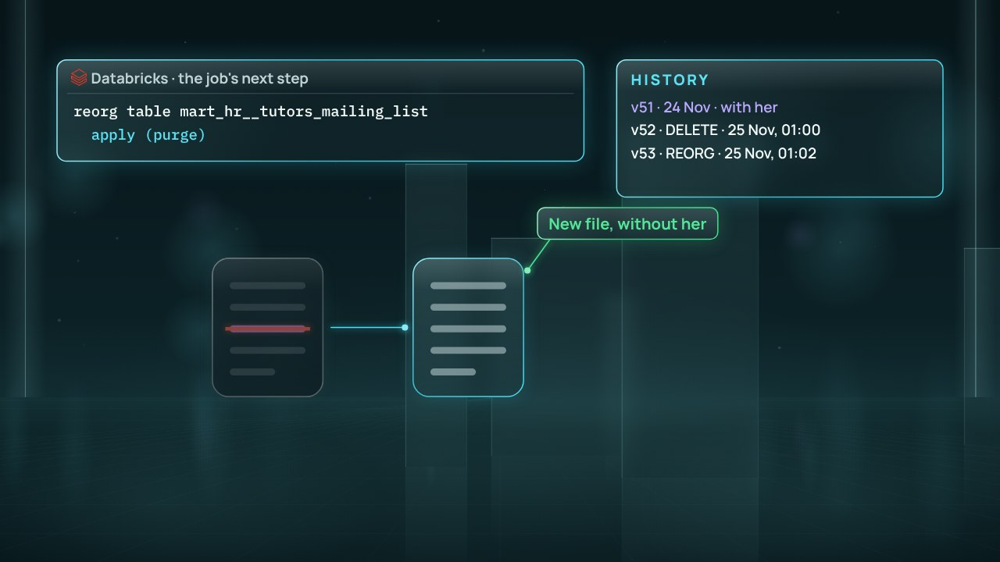

← Anterior · Película 2 de 5
Cuánto tiempo, y luego qué
Un calendario por tipo de registro: cuánto se guarda cada uno, desde qué hecho y luego qué; y retenciones que paran el reloj.
Temas › Protección de datos y privacidad › Guardado por una razón
El contrato de tutora de Linh Nguyen termina el 20 de noviembre. Cuatro días después pregunta qué guarda la universidad de ella y pide dejar la lista de tutores. Sus datos están bajo seis números, en documentos y copias. Para responder en 30 días, debe hallarlo todo, con una razón para cada parte.
Borrador · El autor aún no lo ha revisado, así que algunos detalles pueden cambiar.
Pausa para pensar está activada: la película se detiene con una pregunta al final de los capítulos.

Descargar el video (en inglés)Archivos de subtítulosLeer el guion (en inglés)
¿Y ahora?
Las cuatro preguntas de Pausa para pensar, para una clase o un equipo. Abre una para ver la respuesta.
Película 3 de 5.
← Anterior · Película 2 de 5
Un calendario por tipo de registro: cuánto se guarda cada uno, desde qué hecho y luego qué; y retenciones que paran el reloj.

Siguiente · Película 4 de 5 →
Borrar es solo el recibo: archivos viejos, logs, el archivo frío y las copias necesitan un final, y la prueba de que llegó.